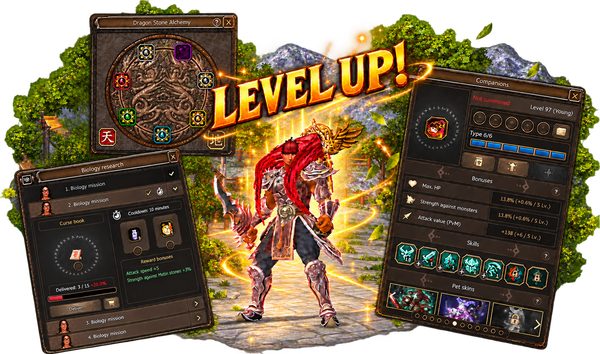
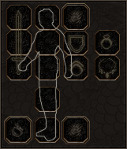
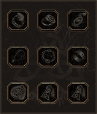

Guida ai livelli 1–75
1. Introduzione
Questa guida ti aiuta a mettere in ordine i tuoi potenziamenti tra il livello 1 e il 75. I livelli di equipaggiamento e di abilità sono obiettivi consigliati. Puoi seguire i compiti concreti della guida ai livelli nella finestra di gioco.
I valori di questa pagina sono consigli, non requisiti di accesso obbligatori.
2. Progressi per livello
| Livello | Consiglio |
|---|---|
| 1–29 | Scopri i compiti del livello 10 della guida ai livelli, la Wiki, il lettore automatico di abilità e il Battlepass. Usa i booster di bronzo iniziali. Fai schiudere il tuo famiglio, inizia a potenziare la tua cavalcatura con le medaglie del cavallo e potenzia le abilità di Buffi: Benedizione e Aiuto del drago. Tra le tue abilità, la priorità va alla tua abilità PvM principale. |
| 30–39 | Porta un'arma di livello 30 a +9, con almeno Danni medi 30% e pietre +3. Inizia il dungeon delle Scimmie, il biologo di livello 30 e la bacheca delle missioni. Apri lo scrigno di livello 30 ( |
| 40–54 | Il dungeon degli Orchi è disponibile dal livello 40, il dungeon Esoterico dal 45. Oltre all'arma di livello 30 ben bonusata, potenzia il resto dell'equipaggiamento e Buffi. Inizia a mettere insieme un set di alchimia leggendario opaco. Prosegui con il biologo di livello 40 e 50. Prossimi obiettivi: per il famiglio il livello 40 e la prima evoluzione, per la cavalcatura l'evoluzione 10 e il livello 11. Al livello 45 apri lo scrigno ( |
| 55–64 | Preparati al dungeon dei Ragni con l'equipaggiamento e l'alchimia opaca descritti sotto. Apri lo scrigno di livello 55 ( |
| 65–74 | Il prossimo obiettivo è la Torre dei Demoni / Mietitore. Punta ad almeno Danni medi 40%, pietre +4, equipaggiamento di livello 61 potenziato e l'abilità principale al grado G. Valori obiettivo: Resistenza contro l'oscurità +70% , Forte contro Zombie +80%, oltre Probabilità di colpo critico +100%.. Inizia a potenziare una stola di circa il 10% e un talismano oscuro a +5. Da ora passano in primo piano le abilità passive: Guerriero coraggioso, Guerriero del Dio Drago, Campione dei sotterranei. Continua con il biologo di livello 70. |
| 75 | Preparati al dungeon di Azrael: il prossimo obiettivo è un'arma di livello 75 +9, Danni medi 40% – 45%, almeno un'abilità importante al grado P, sei pietre di alchimia mitiche opache e l'armatura di livello 66 +9. Metti |
Arma di livello 75 per classe: spadone a due mani per i Guerrieri, spada per i Sura, campana per gli Sciamani, pugnale per i Ninja. I compiti del livello 75 richiedono davvero l'arma +9, almeno Danni medi 40% ottenuto con lo Switchbot, un'abilità al grado P e sei pietre di alchimia mitiche; gli altri consigli sono facoltativi.
Pause consigliate per il farming
| Livello | Consiglio |
|---|---|
| 55 | Al livello 55, consigliamo di fermarti per qualche giorno prima di salire ancora di livello. Farma i dungeon disponibili a questo livello, raccogli materiali di miglioramento e usali per potenziare il tuo personaggio prima di proseguire. |
| 75 | Al livello 75, consigliamo di fermarti per qualche giorno prima di salire ancora di livello. Farma i dungeon disponibili a questo livello, raccogli materiali di miglioramento e usali per potenziare il tuo personaggio prima di proseguire. |
3. Ordine di farming dei Metin
Metin della Battaglia ► Metin della Gelosia ► Metin dell'ombra ► Metin del Diavolo ► Metin della Caduta ► Metin dell'Assassino ► Metin Jeon-Un
| # | Metin | Livello del Metin |
|---|---|---|
| 1. | Metin della Battaglia | 15 |
| 2. | Metin della Gelosia | 35 |
| 3. | Metin dell'ombra | 45 |
| 4. | Metin del Diavolo | 55 |
| 5. | Metin della Caduta | 60 |
| 6. | Metin dell'Assassino | 70 |
| 7. | Metin Jeon-Un | 90 |
I livelli sono quelli dei Metin stessi, non livelli del personaggio obbligatori. Metin Jeon-Un è il prossimo obiettivo di farming quando riesci a colpirlo bene. È un ordine consigliato, non l'elenco completo dei Metin.
4. Equipaggiamento per il livello 55
Questo modello è pensato per il dungeon dei Ragni e il farming PvM a questo livello. Scegli la tua classe:


Pietre: +3 fino al dungeon dei Ragni, +4 al Mietitore. Dal dungeon di Azrael, pietra dei mostri +5 nell'arma e pietra d'attacco +5 nell'armatura; +5 ovunque serve solo dai dungeon di livello 90. Dall'armatura di livello 48: pietre di schivata, attacco e vitalità.
5. Alchimia: leggendaria opaca +4
Un set completo di pietre del drago leggendarie +4 a purezza opaca, per questo profilo di dungeon. Dettagli: alchimia.
Alchimia
Nel granato metti solo Forza contro i boss e Resistenza contro i boss; nella giada, sotto il livello 90, Forza nei sotterranei e Velocità d'attacco. Il bonus contro gli animali appartiene a questo profilo di dungeon. Non consigliamo bonus di PM.
6. Potenziamenti per il livello 55
| Sistema | Consiglio |
|---|---|
| Abilità | L'abilità PvM principale intorno a G1. Esempio Guerriero corporeo: Aura della spada G1, Estasi da combattimento M5. Per le altre classi applica lo stesso alle tue abilità principali. |
| Buffi | Benedizione G1; Aiuto del drago G1; Attacco+ M5 e Rapidità M1 quando disponibili. Sono i livelli di abilità di Buffi, non le abilità di un giocatore Sciamano. |
| Sistema dei pet | Almeno il livello 40 del famiglio, meglio se tipo 3; abilità contro i mostri 5/10. Prossimo obiettivo: livello 60 e l'abilità contro i Metin. |
| Sistema cavalcature | Prima evoluzione e livello 11 della cavalcatura. I compiti del livello 55 chiedono 10/10 nell'abilità contro i mostri; potenziala per prima, poi quella contro i boss. |
| Biologo | Ricerche dei livelli 30, 40 e 50 completate; continua al livello 60. |
| Rugiade | |
| Potenziamenti | Gli oggetti di bronzo del Dio Drago sono permanenti. |
| Pesce | Un pesce di status facile da ottenere per la tua classe: Guerriero |
Prossimi obiettivi per il livello 75
Un famiglio intorno al livello 70, tipo 3, con abilità contro mostri e Metin potenziate e un'abilità critica; cavalcatura al livello 16.  Pesce dell’attacco è consigliato dal dungeon di Azrael. Nella stola va un arco adatto con danno medio, per esempio
Pesce dell’attacco è consigliato dal dungeon di Azrael. Nella stola va un arco adatto con danno medio, per esempio  Arco d'Acciaio Corvino+9.
Arco d'Acciaio Corvino+9.
Valori obiettivo complessivi per il livello 55
| Bonus | Obiettivo consigliato |
|---|---|
| Max. HP | 16.000 |
| Resistenza fuoco | 70% |
| Forte contro Animali | 80% |
| Probabilità di colpo critico | 80–90% (min. 80%) |
Valori obiettivo consigliati, bonus attivi inclusi; non sono totali garantiti né requisiti di accesso.
7. Negozio Gaya fisso
Da giocatore F2P, gli oggetti del primo negozio Gaya fisso sono potenziamenti iniziali importanti. Danno un aiuto utile già prima dei grandi cambi di equipaggiamento. Preferisci i bonus adatti al tuo farming.
| Oggetto | Nome | Prezzo | Bonus principali |
|---|---|---|---|
| Bracciale dell'Amore (Gaya) | 35 Gaya | Forza vs mostri +2% | |
| Bracciale dell'Armonia (Gaya) | 35 Gaya | Forza contro le pietre di metin +2%. | |
| Collana dell'Amore (Gaya) | 35 Gaya | Forza contro i boss +2% | |
| Anello di luna crescente (Gaya) | 75 Gaya | Max. HP +1000 Forza vs mostri +5% | |
| Amuleto Nazar (Gaya) | 75 Gaya | Forza vs mostri +5% Forza contro le pietre di metin +3%. Probabilità di drop di un lingotto extra +5% |
8. Sistemi e attività quotidiane
| Sistema | Consiglio |
|---|---|
| Guida ai livelli | Dà obiettivi di progressione e ricompense. Ritira in ordine le ricompense dei compiti dei livelli 10, 35, 55 e 75. |
| Scrigni di livello | Apri gli scrigni dei livelli 30 |
| Bacheca delle missioni | Dal livello 30 è un'importante fonte di ricompense. Scegli compiti su mappa e nei dungeon adatti al tuo farming attuale. Completa anche le missioni giornaliere e settimanali: così il tuo farming abituale ti dà ricompense extra. |
| Eventi giornalieri attivabili | Controlla ogni giorno il calendario degli eventi. Attiva e completa gli eventi disponibili; usa il loro tempo attivo per un farming adatto al bonus. |
| Battlepass | Completa i compiti insieme al tuo solito farming di Metin, boss e dungeon; ritira regolarmente le ricompense disponibili. |
| Sistema dei pet Sistema cavalcature | Per il famiglio contano livello, tipo, evoluzione e abilità PvM; per la cavalcatura il potenziamento con le medaglie del cavallo, l'evoluzione e le abilità PvM. Tieni d'occhio anche i bonus di collezione e sblocco degli aspetti. |
| Biologo | Dal livello 30 porta avanti sempre la ricerca in corso: dà bonus permanenti. |
| Sistema delle stole | Intorno alla Torre dei Demoni / Mietitore inizia a raccogliere sul serio; all'inizio circa il 10%, al dungeon di Azrael il 15% di assorbimento e un arco adatto con danno medio. |
| Booster | All'inizio usa le versioni di bronzo, poi passa a booster che accettano bonus. I bonus si aggiungono e si cambiano nei booster. |
| Pesca Estrazione mineraria | Fanno parte anche dei compiti del livello 55. Pianifica le attività necessarie per la tua progressione e le missioni accanto al farming quotidiano. |
Preparazione al farming
| Potenziamento | Consiglio |
|---|---|
| Guanti del ladro | Acquista |
| Pesci | Acquista da Pescatore il pesce adatto alla tua classe: |
| Rugiade | Dal livello 45, usa anche questi oggetti mentre farmi: |
Tasti
Wiki:  o
o  ► Inventario speciale:
► Inventario speciale:  ► Pannello famiglio / cavalcatura:
► Pannello famiglio / cavalcatura:  ► Lettore automatico di abilità: nella finestra delle abilità
► Lettore automatico di abilità: nella finestra delle abilità  +
+ 
9. Evocazione dei cristalli Verzum
Dai Metin adatti puoi raccogliere frammenti di cristallo. Dieci frammenti uguali diventano automaticamente un oggetto di evocazione. Usandolo, davanti a te appare un cristallo Verzum che solo tu puoi danneggiare. Puoi avere al massimo venti cristalli evocati contemporaneamente; nei dungeon l'evocatore non si può usare.
Così il normale farming di Metin ti dà obiettivi di farming personali e bottino extra. Dai cristalli puoi ottenere anche frammenti di evocazione dei boss. All'inizio sono rilevanti le tre varianti qui sotto; scegli sempre il cristallo adatto alla tua forza.
| Oggetto | Oggetto di evocazione | Cristallo evocato | Livello |
|---|---|---|---|
| Cristallo Verzum (Invidia) | Cristallo Verzum (Invidia) | 35 | |
| Cristallo Verzum (Anima) | Cristallo Verzum (Anima) | 40 | |
| Cristallo Verzum (Diavolo) | Cristallo Verzum (Diavolo) | 55 |
Nota: con  Biglietto cristallo Verzum puoi comprare cristalli; il biglietto non è l'oggetto di evocazione stesso. Fonti dei frammenti: cristalli Verzum.
Biglietto cristallo Verzum puoi comprare cristalli; il biglietto non è l'oggetto di evocazione stesso. Fonti dei frammenti: cristalli Verzum.